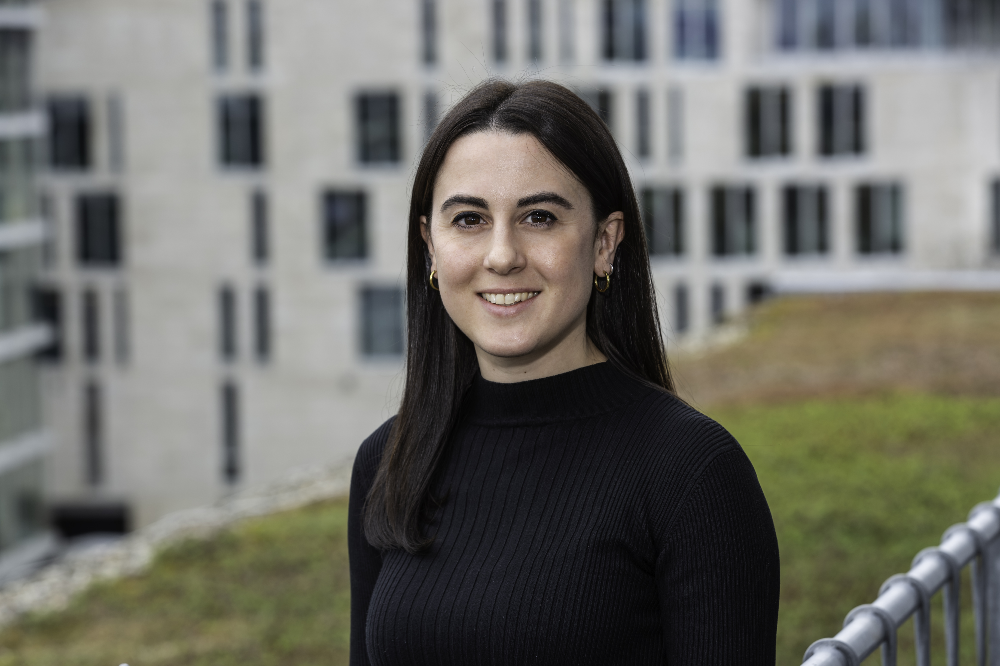
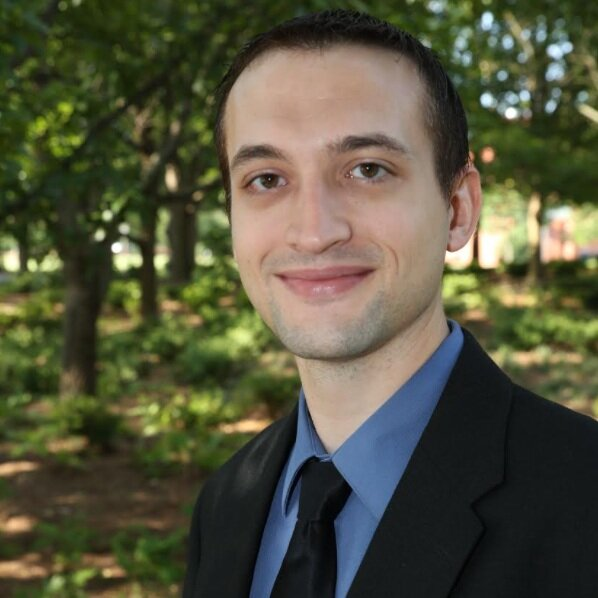
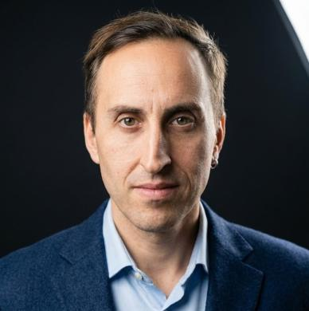
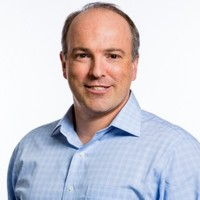
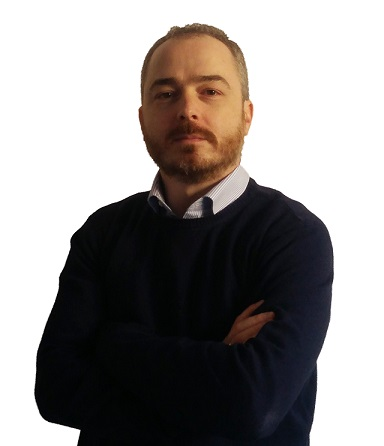
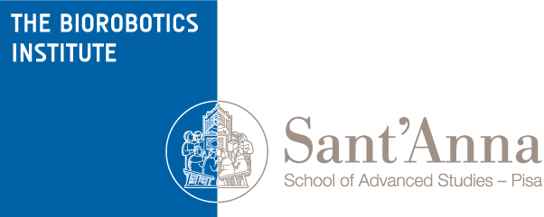

About
Wearable robots, such as robotic exoskeletons and prostheses, are rapidly transitioning from research prototypes to functional devices impacting healthcare, industry, and daily life. On one side, advances in surgical techniques and implantable technologies have enabled highly integrated bionic limbs; on the other side, AI‑driven or neuromuscular‑informed shared control strategies are opening new possibilities for adaptable, task‑agnostic wearable robots.
Despite significant progress in mechatronic hardware, the human‑machine interface (HMI) remains a critical bottleneck for achieving seamless, intuitive, and safe operation. How can engineers finely tune system autonomy to preserve the user’s sense of motor agency? What breakthroughs are redefining the ways humans interface with wearable robots? And what design strategies will shape the roadmap for the next generation of these devices?
This half‑day workshop will convene leading experts from academia, industry, and clinical practice to address these questions and more. Discussions will cover advances in multimodal sensing, biosignal decoding, shared control architectures, and adaptive AI‑based controllers, approaches aimed at enhancing functionality while safeguarding user agency and ensuring intuitive, seamless interaction.
Through invited talks, interactive panels, and hands‑on discussions, participants will gain insights into state‑of‑the‑art methods and emerging research directions, fostering collaborations across disciplines. The workshop will provide an inclusive platform for early‑career researchers, clinicians, engineers, and users to exchange ideas, address challenges, and shape the future of wearable robotics.
Program
Illustrative Morning Session (or Afternoon 2 - 6 pm)
| Time | Activity |
|---|---|
| 09:00 – 09:15 | 🗣️ Welcome & Opening Remarks |
| 09:15 – 09:30 | 🎤 Keynote Talk 1 |
| 09:30 – 09:45 | 🎤 Keynote Talk 2 |
| 09:45 – 10:00 | 🎤 Keynote Talk 3 |
| 10:00 – 10:15 | 🎤 Keynote Talk 4 |
| 10:15 – 10:45 | ☕📋 Coffee Break and Poster/Demo Session |
| 10:45 – 11:00 | 🎤 Keynote Talk 5 |
| 11:00 – 11:15 | 🎤 Keynote Talk 6 |
| 11:15 – 11:30 | 🎤 Keynote Talk 7 |
| 11:30 – 12:15 | 💬 Panel Discussion - Who’s leading motion? Embedding Intelligence in Wearable Robots |
| 12:15 – 12:30 | 🗣️ Closing Remarks |
Speakers

Dr. Enrica Tricomi
Prof. Aaron Young
Prof. Leonardo Cappello Dr. Marta Gherardini
Dr. Marta Gherardini

Prof. Levi HargroveOrganizers


Prof. Dr. Christian CiprianiSubmissions
📄 Submit Abstract
- ⏰ Deadline: 30/06/2026
- ✉️ Contacts: federico.masiero@tum.de, marta.gherardini@santannapisa.it
- 🧾 Subject email:
[BioRob26 Advanced HMIs Workshop Abstract Submission] - 📐 Poster Format:84.1 cm x 118.9 cm
- 📎 Template: 2-page abstract using IEEE transactions template
- 🔗 Submission procedure: via email
🤖 Submit Demo
- ⏰ Deadline: 30/06/2026
- ✉️ Contact: federico.masiero@tum.de, enzo.mastinu@santannapisa.it
- 🧾 Subject email:
[BioRob26 Advanced HMIs Workshop Demo Submission] - ⚙️ Instructions: include needed and brought equipement, 2-page abstract (IEEE format) and video of the Demo
- 🔗 Submission procedure: via email

